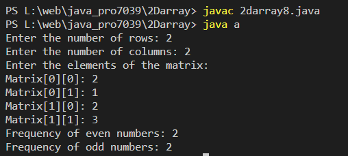

Program to find the frequency of odd & even numbers in the given matrix
Code:-
import java.util.Scanner;
class a {
public static void main(String[] args) {
Scanner scanner = new Scanner(System.in);
// Get the number of rows and columns for the matrix
System.out.print("Enter the number of rows: ");
int rows = scanner.nextInt();
System.out.print("Enter the number of columns: ");
int columns = scanner.nextInt();
// Create the matrix
int[][] matrix = new int[rows][columns];
// Input elements into the matrix
System.out.println("Enter the elements of the matrix:");
for (int i = 0; i < rows; i++) {
for (int j = 0; j < columns; j++) {
System.out.print("Matrix[" + i + "][" + j + "]: ");
matrix[i][j] = scanner.nextInt();
}
}
// Find the frequency of odd and even numbers
int oddFrequency = 0;
int evenFrequency = 0;
for (int i = 0; i < rows; i++) {
for (int j = 0; j < columns; j++) {
if (matrix[i][j] % 2 == 0) {
evenFrequency++;
} else {
oddFrequency++;
}
}
}
// Display the result
System.out.println("Frequency of even numbers: " + evenFrequency);
System.out.println("Frequency of odd numbers: " + oddFrequency);
// Close the scanner
scanner.close();
}
}
Output:-
